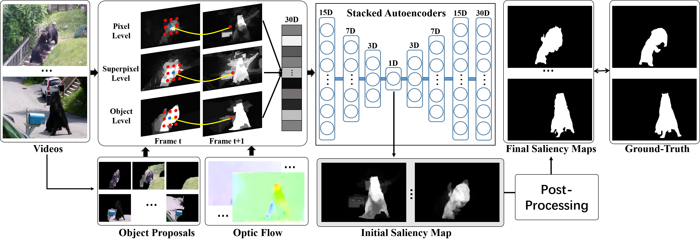
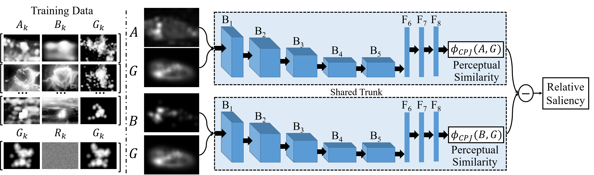
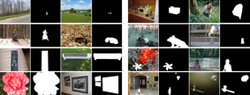
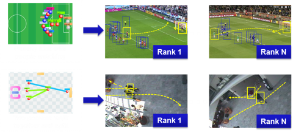
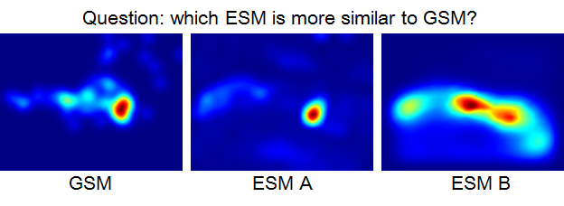
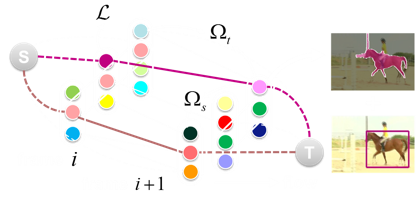
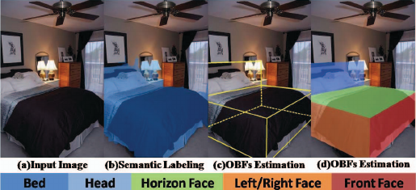

Changqun Xia's Homepage
Time and Tide Wait for No Man!
About
I am a Phd Student at the State Key Laboratory of Virtual Reality Technology and System, School of COmpute Science and Engieering, Beihang University, advised by Prof. Jia Li.
My Research interests include compute vision and image understanding.
This is my detailed CV.
[2018-06-20] A large salient object detector dataset (denoted as XPIE) is released. It contains 10,000 images with precise binary masks and 8,598 images that are considered to have no significant salient objects.[Dataset]
Publications


Semantic Object Segmentation in Tagged Videos via Detection.
Yu Zhang, Xiaowu Chen, Jia Li, Chen Wang, Changqun Xia.
IEEE Transactions on Pattern Analysis and Machine Intelligence, 2018. [PDF]
Yu Zhang, Xiaowu Chen, Jia Li, Chen Wang, Changqun Xia.
IEEE Transactions on Pattern Analysis and Machine Intelligence, 2018. [PDF]

Learning a Saliency Evaluation Metric Using Crowdsourced Perceptual Judgments.
Changqun Xia, Jia Li, Jinming Su, Ali Borji.
arXiv preprint arXiv:1806.10257, 2018. [PDF]


High-level Representation Sketch for Video Event Retrieval.
Yu Zhang, Xiaowu Chen, Liang Lin, Changqun Xia.
SCIENCE CHINA Information Sciences, 2016.
[PDF]
Yu Zhang, Xiaowu Chen, Liang Lin, Changqun Xia.
SCIENCE CHINA Information Sciences, 2016.
[PDF]



Adaptive Template for Parsing Object of Indoor Scene Image.
Changqun Xia, Jie Xu, Qing Li, Yu Zhang, Xiaowu Chen.
International Conference on Virtual Reality and Visualization, 2015. [PDF]
Changqun Xia, Jie Xu, Qing Li, Yu Zhang, Xiaowu Chen.
International Conference on Virtual Reality and Visualization, 2015. [PDF]
Activities
- Reviewer for MM 2017
Contact
Email: xiacq@buaa.edu.com.
You can also find me on Google Scholar.